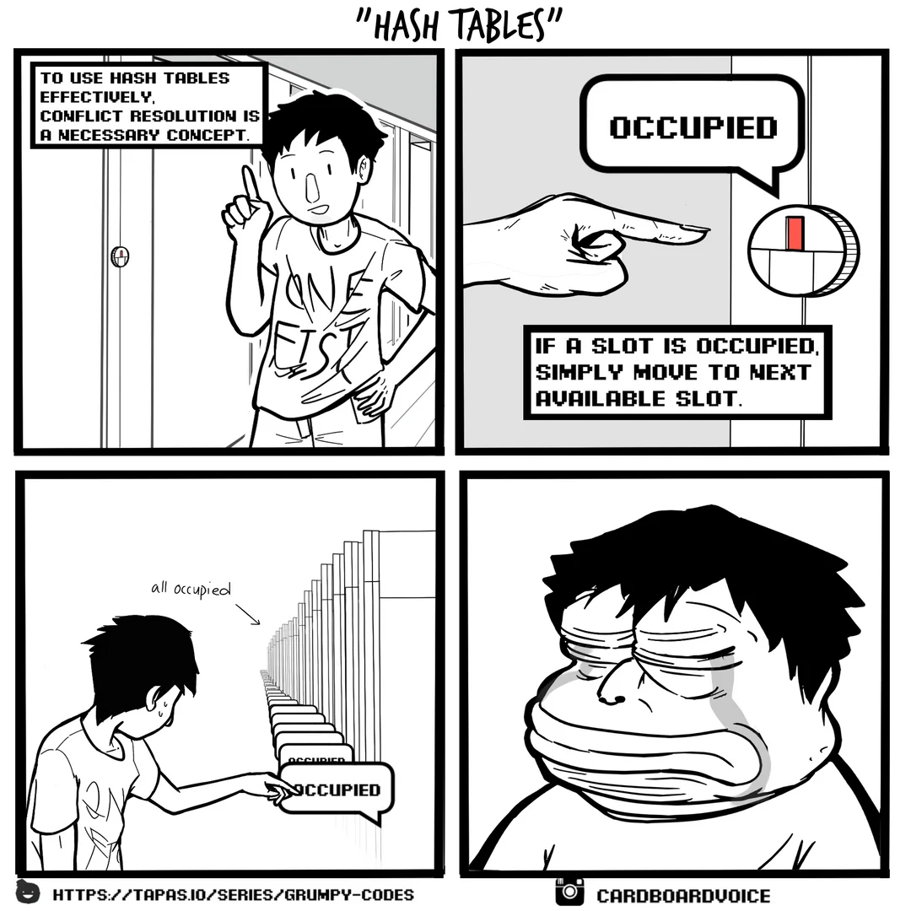

C10 Tableau associatif, hachage ¶
"Warning a hash table is only as good as the hash function. A bad hash function will turn the table into a degenerate association list, with linear time lookup instead of constant time lookup."
(Module Hashtbl)
Cours¶
Attention
Ce diaporama ne vous donne que quelques points de repères lors de vos révisions. Il devrait être complété par la relecture attentive de vos propres notes de cours et par une révision approfondie des exercices.
Travaux dirigés¶
Travaux pratiques¶
 Exercice 1 : Quelques fonctions de hachage sur les chaines de caractères¶
Exercice 1 : Quelques fonctions de hachage sur les chaines de caractères¶
On propose de tester dans cet exercice trois fonctions de hachage sur les chaines de caractères, on pourra les coder au choix en C ou en OCaml. On testera ces fonctions sur un ensemble de 5000 chaines de caractères toutes de longueurs 6 et qui ont été générés aléatoirement et contiennent toutes des caractères ascii imprimables (ceux de codes 32 à 126) et téléchargeables ci-dessous : Chaines aléatoires Dans tous les cas, on utilisera une table de hachage de taille 10000.
-
Coder les trois fonctions suivantes :
-
Somme des codes des caractères ascii
Cette fonction fait simplement la somme des codes ascii des caractères qui la compose, par exemple, le hash de"MP2I"est :77 + 80 + 50 + 73 = 280car les codes ascii deM,P,2etIsont respectivement77, 80, 50et73. La table de hachage ayant une taille de 10000, aucun modulo n'est nécessaire, le plus grand hash possible étant 6*126 = 756. -
Produit des codes des caractères
On calcule le produit des codes ascii des caractères modulo 10000. PourMP2Ion obtient :77*80*50*73 = 22484000qui donne4000modulo 10000. -
Hachage polynomial
On fixe une valeur arbitrairex=31puis on calcule la somme modulo 10000 des \(c_ix^i\) où les \(c_i\) sont les codes ascii des caractères de la chaine. Par exemple, pourMP2Ion obtient : \(77 + 80\times31 + 50\times31^2 + 73\times31^3 = 2225350\) qui donne 5350 modulo 10000.Aide
On pourra utiliser dans un premier temps le calcul de puissance puis remarquer que l'expression précédente peut aussi se calculer (plus efficacement) avec : \(((((73 \times 31) + 50)\times 31) + 80)\times31 + 77\)
-
-
Sur les 5000 chaines de test données ci-dessus, faire une évaluation empirique de ces fonctions de hachage, par exemple en calculant pour chacune d'elle le nombre maximal de collision et le nombre total de collision. Pour cela on pourra créer un tableau de 10000 cases (les 10000 valeurs possibles de hash) initialisé à
0puis calculer successivement les hash des 5000 chaines et incrémenter la case correspondante du tableau.
Pour aller plus loin
Pour des exemples de "bonnes" fonction de hachage (code donné en C) sur les chaines de caractères, on pourra consulter cette page.
Exercice 2 : Implémentation en C d'une table de hachage¶
On reprend ici l'exemple vu en cours du calcul du nombre d'occurrence des mots dans un texte. On rappelle que les maillons des listes chainées utilisées sont définies par :
struct node
{
char word[26];
int occ;
struct node *next;
};
typedef struct node node;
typedef node *list;
-
Ecrire la fonction de prototype
bool is_in_list(list l, char w[26])qui renvoietrueoufalseselon que la chaine de caractèrewfigure ou non dans la listel.Aide
La fonction
strcmpdisponible après avoir inclusstring.hcompare deux chaines de caractères et renvoie0lorsqu'elles sont égales. -
Ecrire les autres fonctions nécessaires :
-
Ajouter une nouvelle clé de prototype
void insert_in_list(list *l, char w[26]). Lorsqu'on ajoute une nouvelle chaine, on la rencontre pour la première fois, par conséquent son nombre d'occurrence est 1. -
Récupérer la valeur associée à une clé :
int get_value_list(list l, char w[26]) -
Modifier la valeur associée à une clé présente :
void update_list(list *l, char w[26], int v)
-
-
La table de hachage est alors définie comme un tableau de liste chainées de taille
SIZE(fixée en début de programme). On prend comme fonction de hachage la fonction ci-dessous similaire au hachage polynomial vu dans l'exercice 1 :Pour tester si une clé est présente dans la table de hachage il suffit alors de tester si elle est présente dans le seau correpondant à son hash :unsigned hahsword(char word[26]) { unsigned hash = 0; char c; int i = 0; while ((c = word[i]) != '\0') { hash = hash*33 + c; i++; } return hash; }Ecrire les autres fonctions nécessaires :bool is_in_hashtable(list hashtable[SIZE], char w[26]) { int bucket_number = hahsword(w) % SIZE; return is_in_list(hashtable[bucket_number], w); }a.
void insert_in_hashtable(list ht[SIZE], char w[26])pour insérer une nouvelle clé.b.
update_hashtable(list ht[SIZE], char w[26], int n)pour mettre à jour la valeur associée à une clé.c.
int get_value_hashtable(list ht[SIZE], char w[26])pour récupérer la valeur associée à une clé. -
On donne ci-dessous une fonction permettant de lire une ligne d'un fichier sur un canal de lecture
FILE *déjà ouvert:Utiliser cette fonction pour lire le fichier de mots extraits de l'oeuvre de J. Verne 20000 lieues sous les mers disponible ci-dessous : Mots extraits Combien de fois le mot "nautilus" apparaît-il dans le livre ?char *get_word(FILE *reader) { char *word = malloc(sizeof(char) * MAX_SIZE); if (fscanf(reader, "%s", word) == 1) { return word; } else { free(word); return NULL; } }
Tester votre réponse :
-
Calculer le nombre total de collision dans la table de hachage.
Exercice 3 : Implémentation en OCaml avec le type array¶
La table de hachage est un tableau de liste de couples string*int :
C'est la traduction en OCaml de l'implémentation en C vue dans l'exercice précédent. Reprendre les mêmes questions que ci-dessus.
Exercice 4 : Implémentation en OCaml avec le module Hashtbl¶
On doit utiliser le module Hashtbl et créer la table de hachage en lui donnant un taille de départ (elle sera automatiquement redimensionnée si nécessaire)
Hashtbl.hash est fonctionne sur des données de n'importe quel type.
Utiliser cette nouvelle implémentation dans le problème du calcul du nombre d'occurrence des mots d'un texte.
Aide
Hashtbl.mempermet de tester l'appartenanceHashtbl.addpermet d'ajouter un nouveau couple (clé, valeur)Hashtbl.findpermet de récupérer la valeur associée à une cléHashtbl.replacepermet de modifier la valeur associée à une clé
Exercice 5 : Somme de deux éléments d'un tableau¶
Etant donné un tableau d'entiers T et un entier s, le problème est de déterminer s'ils existent deux éléments de ce tableau dont la somme est s. Par exemple, si T = [5, 6, 1, -4, 3] et s=9 alors la solution est (6,3).
-
Ecrire une version naïve de complexité quadratique permettant de résoudre le problème à l'aide d'une double boucle.
-
En utilisant une table de hachage (et dans le langage de votre choix) écrire une solution plus efficace.
-
Tester ces deux implémentations en mesurant leur performance sur les nombres téléchargeables ci-dessous en recherchant deux nombres de somme 42 Liste de nombres Vous pouvez tester votre réponse : (donner le plus grand des deux nombres)
Exercice 6 : Filtre de Bloom¶
Un Filtre de Bloom est une structure de données probabilistes pour laquelle le test d'appartenance :
- renvoie toujours vraie si l'élément se trouve dans la structure,
- renvoie parfois vraie si l'élément ne se trouve pas dans la structure.
Un élément \(x\), tel que le test d'appartenance renvoie vraie alors que \(x\) n'est pas dans la structure s'appelle un faux positif.
Un filtre de Bloom de taille \(m\) sur \(k\) fonctions de hachage se compose :
- d'un tableau de booléens \(B\) de taille \(m\) (ce tableau est initialisé à false)
- de \(k\) fonction de hachage \(h_0,\dots, h_{k-1}\) toutes à valeurs dans \([0;m-1]\)
Pour insérer un élément \(x\), on calcule les \(k\) valeurs de hachage de x : \((h_0(x),\dots,h_{k-1}(x))\) et pour tout \(i \in 0,\dots k-1\) on affecte \(B(h_i(x))\) à vraie. Pour tester si un élément est ou pas dans la structure on teste si tous les \(B(h_i(x))\) sont à vraies (on rappelle que ce teste peut produire un faux négatif).
Par exemple, supposons que le filtre soit composé d'un tableau de 8 booléens et de deux fonctions de hachage \(h_0\) et \(h_1\) sur les chaines de caractères.
- On insère le mot "chat" et on suppose \(h_0(\)"chat"\()=1\) et \(h_1(\)"chat"\()=7\) le filtre devient \([0,1,0,0,0,0,0,1]\)
- On insère le mot "dent" et on suppose \(h_0(\)"dent"\()=2\) et \(h_1(\)"dent"\()=7\) le filtre devient \([0,1,1,0,0,0,0,1]\)
- On teste l'appartenance de "chien" et on suppose \(h_0(\)"chien"\()=1\) et \(h_1(\)"dent"\()=3\) alors le test renvoie faux puisque le bit 3 est à 0.
- On teste l'appartenance de "poil" et on suppose \(h_0(\)"poil"\()=7\) et \(h_1(\)"poil"\()=2\) le test renvoie 1 puisque ces deux bits sont à 1, c'est donc un faux positif.
Le but de l'exercice est d'implémenter un filtre de Bloom sur les chaines de caractères (dans le langage de son choix), puis de le tester sur les mots du dictionnaire français et d'obtenir le taux de faux positifs en fonction de \(m\) (le nombre de bits) et de \(k\) (le nombre de fonction de hachage).
-
Ecrire une fonction de hachage sur les chaines de caractères prenant en argument un entier
xet un entiermet renvoyant la somme modulomdes \(c_ix^i\) où les \(c_i\) sont les codes ascii des caractères de la chaine. Un filtre de Bloom sera alors un ensemble de \(k\) valeur pour le paramètrexassocié à un tableau de booléens de taillem. -
Ecrire une fonction
ajoutequi prend en argument une chaine de caractère, ainsi qu'un filtre de bloom et modifie ce filtre afin d'y ajouter la chaine. -
Ecrire une fonction
appartientqui prend en argument une chaine de caractère, ainsi qu'un filtre de bloom et renvoie un booléens indiquant si cette chaine appartient au filtre. -
Le fichier
"/usr/share/dict/french"est un dictionnaire français, contenant \(346\,200\) mots (un par ligne). Insérer la majorité de ces mots dans un filtre de bloom et en garder une petite partie afin de tester le nombre de faux positifs. Par exemple, on pourra garder \(1\,200\) mots en en insérer \(345\,000\). -
Déterminer le pourcentage de faux positifs sur les mots non insérés en faisant varier les paramètres \(m\) et \(k\).
Note
Vous devriez retrouver approximativement les mêmes résultats que sur cette page en indiquant pour la valeur \(n\) le nombre de mots présents dans le dictionnaire c'est à dire \(345\,000\) (si vous avez conservé \(1\,200\) mots pour déterminer le pourcentage de faux négatif).
Exercice 7 : Recherche de cycle dans un jeu de la vie à une dimension¶
On considère une variante du jeu de la vie se déroulant dans un tableau à une dimension. L'évolution de la case d'indice \(i\) de ce tableau ne dépend que de l'état de la case d'indice \(i\) et de ses voisins immédiats (donc les cases d'indices \(i-1\) et \(i+1\).). On donne ci-dessous l'évolution de la case centrale en fonction de l'état de ces 3 cases en notant "#" une case vivante et "." une case morte
...\(\rightarrow\).(si les 3 cases sont vides, la case centrale reste vide)..#\(\rightarrow\)#.#.\(\rightarrow\)..##\(\rightarrow\)##..\(\rightarrow\)##.#\(\rightarrow\).##.\(\rightarrow\)####\(\rightarrow\).
Note
Ces évolutions correspondent à la rule90
D'autre part on considère ici un tableau fini de \(N\) cases et on considère que la voisine de gauche de la case d'indice 0 ainsi que la voisine de droite de la case d'indice \(N-1\) sont toujours des cellules mortes. On donne ci-dessous un exemple d'évolution avec \(N=10\)
| 🟐 | 🟐 | 🟐 | 🟐 | 🟐 | 🟐 |
evolue en
| 🟐 | 🟐 | 🟐 | 🟐 | 🟐 |
-
Ecrire une implémentation (dans le langage de votre choix) d'une fonction prenant en entrée un tableau de \(N\) cases et renvoyant le tableau représentant l'évolution du tableau après une itération des règles de transformation.
-
Pour \(N=30\) et pour le tableau initial représenté par "...............#.............." (toutes les cases sont mortes sauf la case d'indice 15) faire afficher les 100 premières évolutions successives.
Aide
Les premières lignes sont :
...............#.............. ..............#.#............. .............#...#............ ............#.#.#.#........... ...........#.......#.......... ..........#.#.....#.#......... .........#...#...#...#........ ........#.#.#.#.#.#.#.#....... .......#...............#...... ......#.#.............#.#..... .....#...#...........#...#.... ....#.#.#.#.........#.#.#.#... -
Justifier rapidement que les évolutions successives contiennent un cycle, c'est-à-dire qu'on retombe sur un contenu de tableau déjà obtenu lors d'une évolution précédente.
-
Proposer une solution utilisant une table de hachage et permettant de déterminer le nombre d'itérations nécessaires avant de rencontrer un motif déjà parcouru.
Testez votre réponse (pour le motif de départ de la question 2)
-
L'algorithme du lièvre et de la tortue de Floyd est un algorithme de détection de cycle. Le principe est de parcourir la liste des états avec une tortue (qui avance de 1 en 1) et un lièvre (qui avance par pas de 2). Si la tortue et le lièvre se rencontrent cela signifie qu'un cycle existe. Proposer une implémentation de ce nouvel algorithme.
Humour d'informaticien¶
